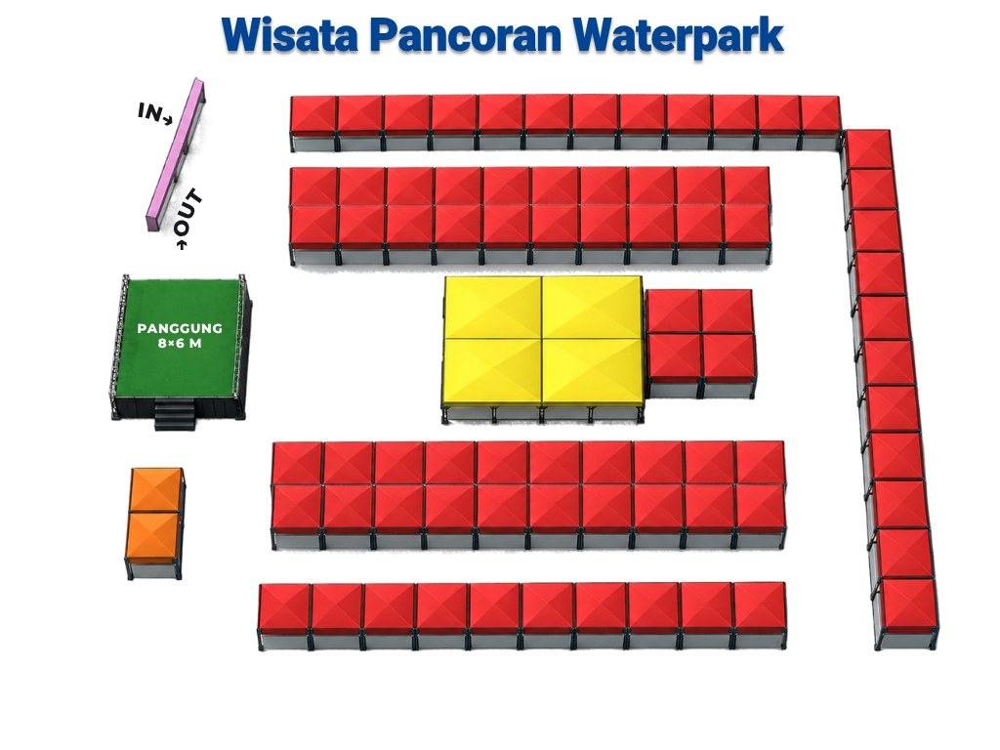

01Executive Summary
Kami menawarkan 5 slot tenant terakhir, masing-masing senilai Rp25.000.000, di festival budaya dan UMKM terbesar Jawa Timur tahun ini, selama tiga hari dengan akses gratis bagi pengunjung.
| Aspek | Keterangan |
|---|---|
| Apa | Festival budaya, pameran UKM/UMKM & ekonomi kreatif, kompetisi, fun run, dan konser rakyat |
| Kapan | 30 Oktober – 1 November 2026, pukul 08.00–22.00 WIB |
| Di mana | Wisata Pancoran Waterpark, Rogojampi, Banyuwangi |
| Siapa | Keluarga, pelajar TK–SMA/SMK, komunitas, pelaku UMKM, pejabat Pemprov Jatim & Pemkab Banyuwangi, perwakilan konsulat negara sahabat |
| Skala | 60 tenant UMKM & Ekraf, panggung utama 8×6 m |
| Estimasi pengunjung | ±5.000 orang per hari (±15.000 selama 3 hari) |
| Tiket | Gratis untuk pengunjung |
| Penawaran | 5 tenant, Rp25.000.000 per tenant |
| Tujuan | Memperingati HUT ke-81 Jatim, mengangkat budaya daerah, dan membawa UMKM menuju pasar lokal, nasional, dan global |
Bagi brand, tenant ini memberi akses langsung ke ±5.000 pengunjung keluarga per hari dari Banyuwangi dan sekitarnya, di acara yang dihadiri Gubernur, Wakil Gubernur, dan pimpinan daerah.
02Tentang Penyelenggara
Acara ini diselenggarakan oleh kemitraan publik–swasta–komunitas yang didukung penuh Pemerintah Provinsi Jawa Timur.
Pancoran Group / Wisata Pancoran Waterpark — dipimpin Haliyatul Istiqomah, mengelola destinasi wisata keluarga di Rogojampi, Banyuwangi yang telah beroperasi lebih dari 20 tahun dengan konsep One Stop Family Adventure.
- 8 wahana air utama: kolam ombak, kolam arus, kolam busa, hingga Water Slide Extreme setinggi 17 m
- Danau buatan dengan perahu wisata dan ikon atraksi Pulau Bidadari
- Akses 25–30 menit dari pusat kota Banyuwangi, dekat bandara
MAKI Korwil Jawa Timur — Masyarakat Anti Korupsi Indonesia, dipimpin Heru Satriyo, S.Ip. sebagai Ketua Pelaksana.
Pendukung: Pemprov Jawa Timur melalui Dinas Kebudayaan dan Pariwisata (Disbudpar) Jatim dan dinas teknis terkait, serta Pemkab Banyuwangi.
03Latar Belakang Event
Festival ini lahir dari kebutuhan untuk mengubah kekayaan budaya Jawa Timur menjadi daya saing ekonomi, tepat di momen Hari Jadi ke-81 Provinsi Jawa Timur.
- Budaya perlu panggung yang hidup. Seni tradisi, termasuk budaya Osing, perlu terus dihadirkan di tengah modernisasi pariwisata.
- UMKM perlu pasar dan jejaring. Pelaku usaha dari Banyuwangi, Jember, Bondowoso, dan sekitarnya membutuhkan ruang temu langsung dengan konsumen dan antardaerah.
- Banyuwangi adalah percontohan. Kabupaten ini konsisten menjadikan budaya sebagai fondasi pariwisata, sehingga dipilih sebagai tuan rumah tingkat provinsi.
- Isu sosial dan lingkungan. Festival juga menjadi wahana edukasi melalui Deklarasi Anti-Bullying dan Banyuwangi Zero Sampah.
04Konsep & Tema Event
Konsepnya adalah pesta rakyat tiga hari yang memadukan budaya, ekonomi kreatif, edukasi, olahraga, dan hiburan dalam satu kawasan wisata keluarga.
Tema resmi: “Bersama Kekayaan Budaya Jawa Timur, UKM/UMKM Berinovasi dan Bertumbuh Kembang Menuju Pasar Global, Lokal dan Nasional”
Budaya & Fashion
Seni budaya kolosal, Fashion Competition “The Beauty of Culture”, peragaan busana budaya
Kreativitas & Edukasi
Painting Competition “Color Your Dream”, lomba mewarnai massal, Deklarasi Anti-Bullying
Sehat, Hijau & Hiburan
Jatim Fun Run 5K, Deklarasi Banyuwangi Zero Sampah, konser pesta rakyat
Sepanjang tiga hari, pengunjung berbelanja di 60 tenant UMKM & Ekraf sambil menikmati suasana waterpark.
05Detail Event
| Parameter | Detail |
|---|---|
| Nama | The Biggest Culture of Jatim with UKM/UMKM & Ekraf Fiesta 2026 |
| Tanggal | Jumat, 30 Oktober – Minggu, 1 November 2026 |
| Waktu | 08.00–22.00 WIB setiap hari |
| Lokasi | Wisata Pancoran Waterpark, Kec. Rogojampi, Kab. Banyuwangi |
| Tiket | Gratis |
| Jumlah tenant | 60 tenant UMKM (terbatas karena luas area); 5 tenant tersedia untuk partner |
| Panggung | Panggung utama 8×6 m |
| Bintang tamu | Lala Widy, Guntur Arisandy, Wandra Restusiyan |
| Tamu VIP | Gubernur Jatim Khofifah Indar Parawansa, Wagub Emil Elestianto Dardak, Bupati Banyuwangi Ipuk Fiestiandani Azwar Anas, Wabup Ir. Mujiono, M.Si, perwakilan Konsulat Jenderal negara sahabat |
| Estimasi pengunjung | ±5.000 orang per hari (±15.000 selama 3 hari) |
Denah Area

06Rundown / Program Acara
Pameran UMKM & tenant berlangsung setiap hari pukul 08.00–22.00 WIB; program panggung berganti tema tiap hari. Jam detail menunggu rundown final panitia.
| Hari | Pagi | Siang–Sore | Malam |
|---|---|---|---|
| Jumat, 30 Okt | Opening Ceremony & pembukaan pameran UMKM | Pertunjukan seni budaya kolosal Disbudpar Jatim | Fashion Competition “The Beauty of Culture” & peragaan busana budaya |
| Sabtu, 31 Okt | Lomba mewarnai massal TK/PAUD/SD | Painting Competition “Color Your Dream”; Deklarasi Anti-Bullying pelajar TK–SMA/SMK | Hiburan panggung & pameran |
| Minggu, 1 Nov | Jatim Fun Run 5K @Banyuwangi | Deklarasi Banyuwangi Zero Sampah (perwakilan desa/kelurahan se-Banyuwangi) | Konser Pesta Rakyat: Lala Widy, Guntur Arisandy, Wandra Restusiyan & penutupan |
07Target Audience
Audiens utama adalah keluarga Banyuwangi dan Jawa Timur bagian timur, diperkuat pelajar, komunitas, dan pelaku usaha.
| Segmen | Profil | Pemicu Kehadiran |
|---|---|---|
| Keluarga | Orang tua 25–45 th dengan anak | Tiket gratis, waterpark, lomba anak, konser |
| Pelajar | TK, PAUD, SD hingga SMA/SMK se-Banyuwangi | Lomba mewarnai, painting competition, Deklarasi Anti-Bullying |
| Anak muda & komunitas | 17–35 th, komunitas lari, seni, fesyen | Fun Run 5K, Fashion Competition, konser artis dangdut populer |
| Pelaku UMKM & Ekraf | Banyuwangi, Jember, Bondowoso, dan sekitarnya | Pameran, jejaring bisnis antardaerah |
| Pemerintah & mitra | Pemprov Jatim, Pemkab Banyuwangi, OPD, perwakilan desa, Konsulat Jenderal | Seremoni HUT ke-81 Jatim, deklarasi |
Wilayah asal: Banyuwangi (utama), Jember, Bondowoso, Situbondo, dan wisatawan yang berkunjung ke Banyuwangi.
08Potensi & Exposure
Tiket gratis, momentum HUT provinsi, dan kehadiran pejabat tinggi menjadikan festival ini magnet pengunjung dengan estimasi ±5.000 orang per hari.
| Kanal | Potensi |
|---|---|
| Traffic lokasi | ±5.000 pengunjung per hari, ±15.000 selama 3 hari, 08.00–22.00 WIB |
| Media online | Sudah diliput sebelum acara oleh detik.com Jatim, Jatim Juara, Abadi News, Taruna News, Nusantara Jaya News, Gantara News, dan lainnya |
| Publik figur | Lala Widy, Guntur Arisandy, Wandra Restusiyan; Gubernur, Wagub Jatim, Bupati dan Wabup Banyuwangi |
| Komunitas | 60 tenant UMKM, sekolah TK–SMA/SMK, desa/kelurahan se-Banyuwangi, peserta Fun Run & kompetisi |
| Internasional | Perwakilan Konsulat Jenderal negara sahabat |
09Bentuk Kerja Sama
Bentuk kerja sama yang kami tawarkan hanya satu: sewa tenant. Acara ini diselenggarakan oleh pihak eksternal, dan Pancoran Group mendapat alokasi 5 tenant untuk ditawarkan kepada brand dan mitra.
Tenant dapat dimanfaatkan untuk:
- Penjualan produk langsung kepada pengunjung
- Display dan launching produk baru
- Sampling dan tester produk
- Aktivasi brand di dalam area tenant
- Pengumpulan database konsumen dan promosi
10Benefit untuk Partner
- Area tenant selama 3 hari — 30 Oktober – 1 November 2026, pukul 08.00–22.00 WIB.
- Tenda tenant sesuai standar penyelenggara.
- Listrik 4A untuk kebutuhan tenant.
- Keamanan dan kebersihan area selama acara.
- Akses langsung ke ±5.000 pengunjung per hari tanpa biaya tiket masuk.
- Bebas berjualan, sampling, dan aktivasi brand di dalam area tenant.
- Jejaring dengan Pemprov Jatim, Pemkab Banyuwangi, dan 60 pelaku UMKM antardaerah.
- Technical meeting dan pendampingan panitia sejak persiapan hingga hari H.
11Paket Kerja Sama
Hanya ada satu paket: Paket Tenant. Tersedia 5 tenant, dialokasikan berdasarkan urutan konfirmasi dan pembayaran DP.
Termasuk
- Area tenant 3 hari
- Tenda standar
- Listrik 4A
- Keamanan dan kebersihan area
- Seluruh benefit pada bagian 10
Tidak termasuk
- Produk
- SDM penjaga tenant
- Peralatan display
- Dekorasi tambahan di luar standar penyelenggara
12Aktivasi Brand
Berikut ide aktivasi yang dapat dijalankan partner di dalam area tenant, sesuai profil pengunjung keluarga dan tema budaya:
- Photo spot budaya bertema Osing/batik dengan bingkai brand, mendorong pengunjung mengunggah foto.
- Games dan doorprize harian — beli produk atau ikuti akun brand untuk ikut undian.
- Sampling dan tester produk kepada pengunjung yang lewat.
- Promo khusus festival — diskon atau bundling selama 3 hari acara.
- Pojok anak — aktivitas mewarnai atau kerajinan singkat bersama brand, sejalan dengan program lomba anak.
- Aksi hijau — tukar sampah plastik dengan produk/voucher, sejalan dengan Deklarasi Banyuwangi Zero Sampah.
13Media & Marketing Plan
Publikasi utama acara dijalankan oleh penyelenggara dan pemerintah daerah; Pancoran Group mendukung dari sisi venue dan komunitas sekitar.
| Kanal | Aktivitas | Fase |
|---|---|---|
| Media partner | Liputan media online & lokal (detik Jatim, Jatim Juara, dll.) | Pra, saat, pasca |
| Instagram & TikTok | Informasi acara dan suasana festival di akun @pancoranwaterpark | Pra, saat |
| Banner & poster | Pemasangan di titik strategis kota, sekolah, dan desa/kelurahan | Pra |
| Komunitas | Sekolah, komunitas lari, UMKM binaan OPD, perangkat desa | Pra |
| Sosialisasi warga | Sosialisasi langsung ke warga Pancoran & Karangbendo (sudah berjalan) | Pra |
| Panggung acara | Informasi lokasi tenant kepada pengunjung di sela acara | Saat |
14Timeline Persiapan
Konfirmasi partner kami tunggu paling lambat 20 Oktober 2026 agar posisi tenant dapat ditetapkan tepat waktu.
| Tanggal | Tahapan |
|---|---|
| 20 Okt 2026 | Batas konfirmasi kerja sama & penandatanganan kesepakatan |
| 22 Okt 2026 | Pembayaran DP 50% dan pengiriman data tenant (nama brand, jenis produk, kebutuhan teknis) |
| 23 Okt 2026 | Penetapan posisi tenant sesuai denah dan pelunasan 50% |
| 27 Okt 2026 | Technical meeting partner & tenant |
| 29 Okt 2026 | Loading barang dan setup tenant |
| 30 Okt – 1 Nov 2026 | Hari H |
| 8 Nov 2026 | Pengiriman laporan & dokumentasi pasca-acara |
15Estimasi Budget
Nilai Paket Tenant sebesar Rp25.000.000 per tenant dialokasikan sebagai berikut:
| Pos | Nilai |
|---|---|
| Sewa lahan & tenda tenant (3 hari) | Rp12.000.000 |
| Kontribusi kepada penyelenggara acara | Rp5.000.000 |
| Listrik 4A & instalasi | Rp3.000.000 |
| Keamanan & kebersihan area | Rp2.500.000 |
| Publikasi & promosi acara | Rp1.500.000 |
| Administrasi & technical meeting | Rp1.000.000 |
| Total per tenant | Rp25.000.000 |
Skema pembayaran: DP 50% saat penandatanganan kesepakatan, pelunasan 50% paling lambat 23 Oktober 2026.
16Call to Action
Hanya tersedia 5 tenant dengan harga Rp25.000.000 per tenant, karena seluruh booth lainnya telah terjual. Kami mengundang brand Anda hadir langsung di tengah ±5.000 pengunjung per hari pada perayaan HUT ke-81 Jawa Timur.
Mari jadwalkan diskusi atau kunjungan lokasi bersama tim kami sebelum batas konfirmasi 20 Oktober 2026.
Amankan slot tenant Anda →17Contact Person
Terima kasih atas perhatian dan kesempatan yang diberikan. Kami yakin kolaborasi ini akan memberi nilai nyata bagi brand Anda sekaligus turut menguatkan budaya dan UMKM Jawa Timur. Kami menantikan kabar baik dan kerja sama yang saling menguntungkan.
Hormat kami,
Panitia The Biggest Culture of Jatim with UKM/UMKM & Ekraf Fiesta 2026
Pancoran Group × MAKI Korwil Jawa Timur